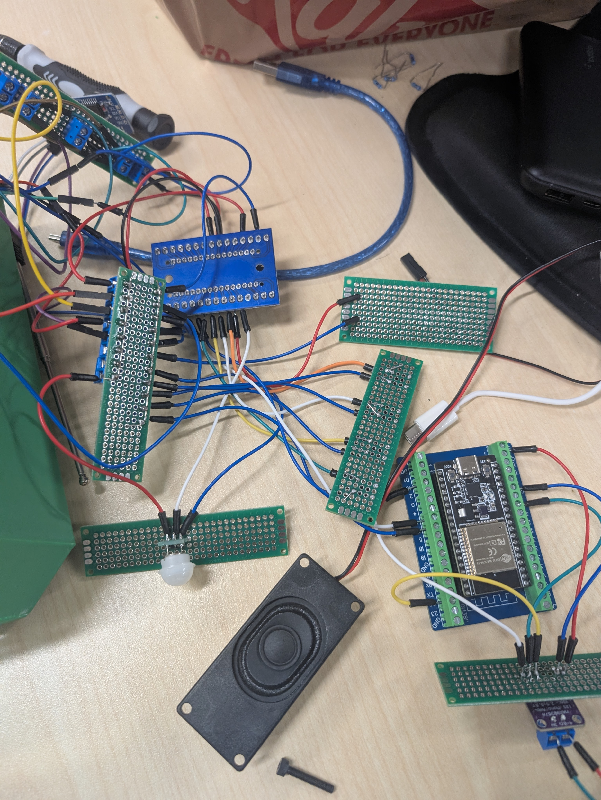
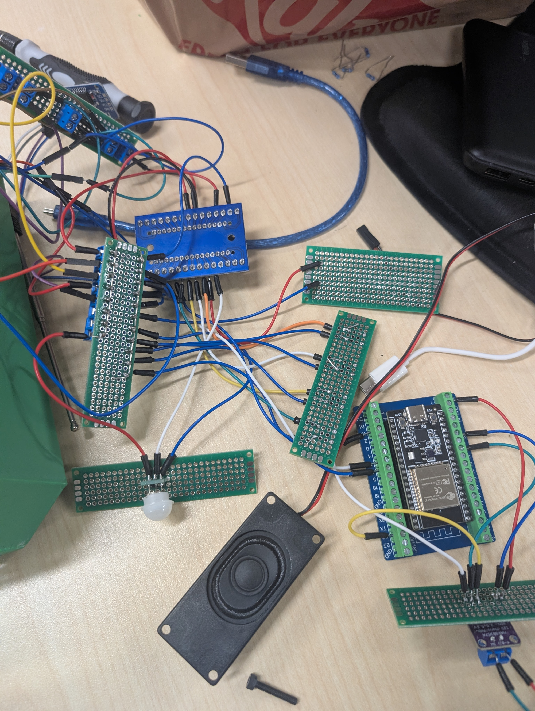
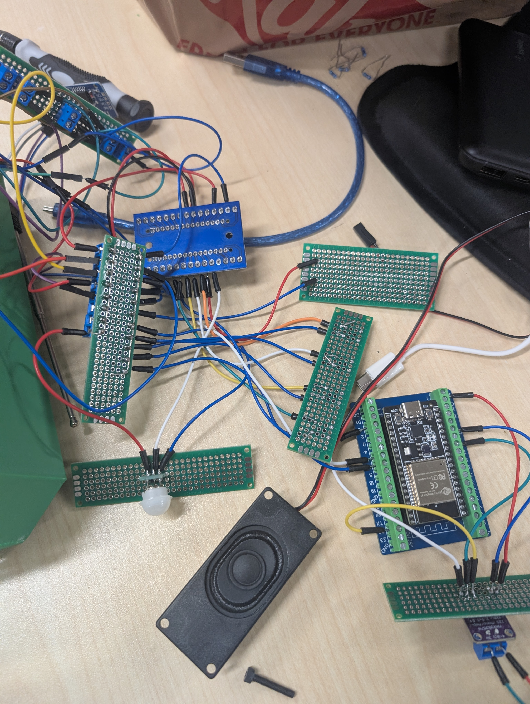

System Integration & Prototyping
 



Ruggedized Field Communication & Sensor System
The objective was to reverse-engineer an existing consumer radio and rebuild it into a ruggedized, multi-functional device for field use. The target users were hikers and emergency responders who need hands-free lighting and communication without relying on cellular networks.
My role focused on the system architecture and hardware integration. We initially attempted to use an ESP32 for its wireless capabilities but quickly identified stability issues with the audio libraries. Pivoting to a robust Arduino Mega 2560 platform, I integrated multiple independent modules including an FM Radio (TEA5767), PIR Motion Sensor, and Bluetooth Audio. I wrote the C++ firmware to manage the state machine, allowing the device to wake up instantly upon detecting motion and toggle between radio and Bluetooth modes seamlessly.
While the electronic and software integration was successful, the mechanical execution highlighted critical constraints in rapid prototyping. We utilized a provisional enclosure that lacked proper strain relief for the complex wiring harness. During final testing, although the power management system delivered 3 hours of runtime and all sensors functioned correctly, the internal connections were fragile. This failure demonstrated that for a device to be truly "rugged," the mechanical packaging and PCB design must be prioritized alongside the firmware, rather than treated as an afterthought.

Interfacing analog sensors and digital communication modules on a single microcontroller bus.
Learning that breadboarded circuits are not viable for field-deployable hardware.
Programming non-blocking code to handle real-time sensor inputs (motion) while playing audio.
Managing current draw from high-power LEDs and audio amplifiers to maximize battery life.